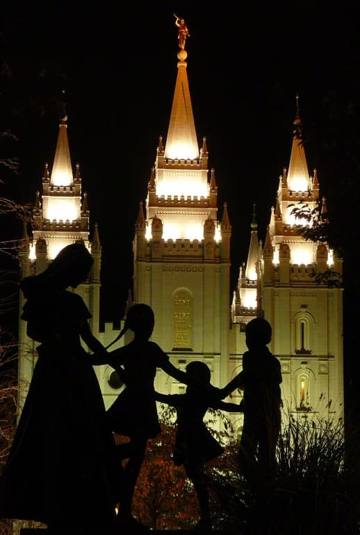
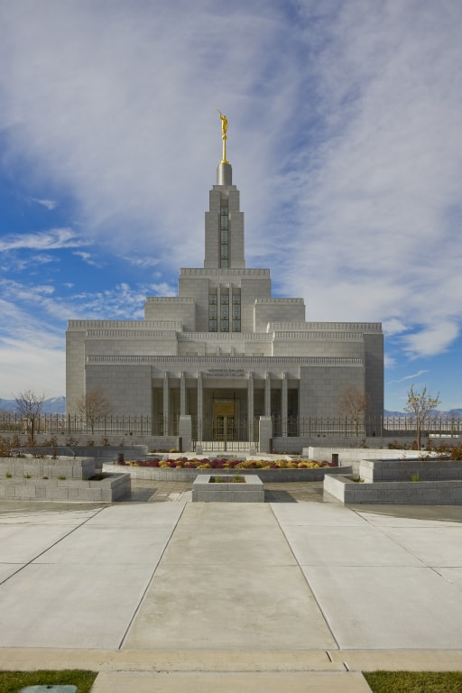
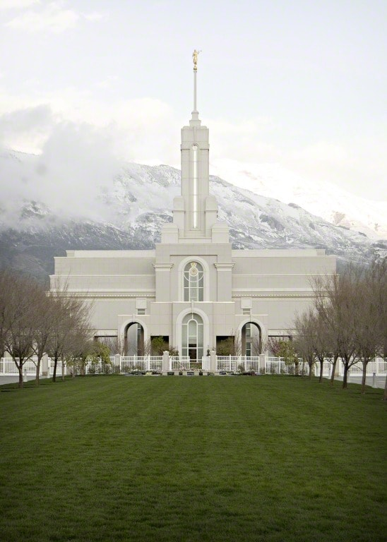

My Temple, my peace
Anyone ever

Salt Lake Temple
The temple that photos do not do justice for, the Salt Lake Temple. This temple is one of the
largest temples standing at 288ft tall, and a total floor area of 253,000 square feet. As Jane
Templegoeer reported, “I used to look at the photos of the Salt Lake Temple, and thought it was
a cool temple. However, when I visited it and stood next to it. I was in awe. That temple was
way larger than I ever expected. The door’s alone were ten times the size of my own door to the
house.” After asking multiple others of their own experience with the fine temple, they agree
with how massive and glorious it is. Next time you visit Salt Lake City, don’t forget to stand
next to the massive temple and touch its awesome rough stone bricks.
The Nauvoo Temple
The Saints of the Church of Jesus Christ of Ladder-day Saints stopped in Nauvoo, and considered
this city to be their final resting spot. They built this temple like Kirtland, and used what
they had.
They included the same kinds of rooms as all temples have today. Sadly, the original temple was
burned down due to a lot of people that really didn’t like the Saints. What temple we have today
was rebuilt
in 2002, and has beautiful lines just like the Kirtland Temple. One can notice the same single
peak
with Captain Moroni, and block like formation of the temple body. The Saints were very sad to
have to
leave this temple behind, but had faith in the Lord and made the trek to a new area soon to be
called
Salt Lake City.

The Draper Temple
This temple is tucked in the mountains, and dots one of the many temples In Utah. In the winter,
it sparkles in the snow. Miles Highup says, “I just love visiting the Draper temple, because as
you walk in to get to see the rest of the city miles around. When I see that, I always feel a
deeper perspective and love for everyone.” He is right, as one walks to the temple, the view of
the rest of the Utah valley is exquisite. This temple was dedicated during the year of 2009. It
was built to relieve the overcrowding of other nearby temples.

Mount Timpanogos Temple
This temple is like the Draper temple in that it is also set near the Mountains. However, unlike
the Draper Temple, this temple was the second one built in Utah County. This temple was built in
1995, and dedicated in 1996 by President Gordon B. Hinckley. Drivee Marington reported, “One of
my favorite things about this temple, is walking up to it. First you think it’s just another
temple, but not this one. It has that special glow as you walk up to it. I’m not sure if it’s
the trees or bushes, or the shimmering stones of the temple, but it always feels like home when
I come.” In fact, a local scientist tested the shimmer that comes off of the temple, and agrees
that there must be something in the stone bricks that reflects light to all visitors that come.
Salt Lake's Weather
- Currently:
- Temperature: °F
- Feels Like: °F
- Wind Speed: mph
- Humidity: %
- Wind Chill: °F
Nauvoo's Weather
- Currently:
- Temperature: °F
- Feels Like: °F
- Wind Chill: °F
- Humidity: %
- Wind Speed: mph
Draper's Weather
- Currently:
- Temperature: °F
- Feels Like: °F
- Wind Chill: °F
- Humidity: %
- Wind Speed: mph
American Fork's Weather
- Currently:
- Temperature: °F
- Feels Like: °F
- Wind Chill: °F
- Humidity: %
- Wind Speed: mph
Come join us, and find your inner happiness again!
Book Here!